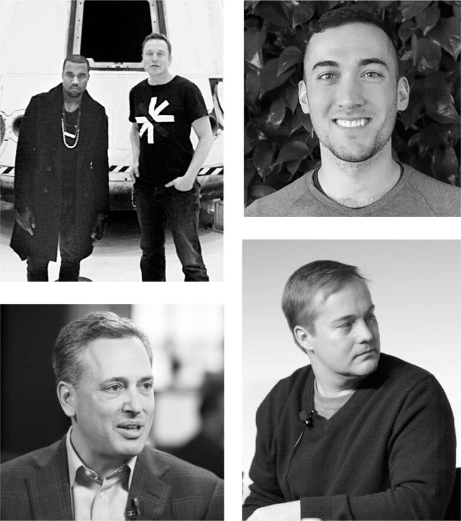

Hội đồng một người
Nhạc sĩ kiêm nhà thiết kế thời trang Ye, trước đây được gọi là Kanye West, là bạn của Musk, theo kiểu đôi khi được dùng để chỉ những người bạn nổi tiếng cùng chia sẻ năng lượng và ánh hào quang nhưng ít thân thiết. Musk đã đưa Ye tham quan nhà máy SpaceX ở Los Angeles vào năm 2011. Một thập kỷ sau, Ye đến thăm Starbase ở miền nam Texas và Musk đến dự tiệc Donda 2 của anh ấy ở Miami. Họ có những điểm chung nhất định, bao gồm cả việc thẳng thắn, và cả hai đều được cho là hơi điên rồ, mặc dù trong trường hợp của Ye, mô tả đó cuối cùng dường như chỉ đúng một nửa. “Niềm tin vào bản thân và sự kiên trì đáng kinh ngạc của Kanye đã đưa anh ấy đến vị trí ngày hôm nay,” Musk nói trên Time năm 2015. “Anh ấy đã chiến đấu cho vị trí của mình trong điện thờ văn hóa với một mục đích. Anh ấy không ngại bị phán xét hay chế giễu trong quá trình đó.” Musk có thể đã tự mô tả chính mình.
Đầu tháng 10, vài tuần trước khi Musk hoàn tất thương vụ Twitter, Ye và các người mẫu của anh ấy đã mặc áo phông “White Lives Matter” tại một buổi trình diễn thời trang, dẫn đến một cuộc tranh cãi dữ dội trên mạng xã hội, đỉnh điểm là một tweet của Ye tuyên bố: “Khi tôi thức dậy, tôi sẽ ở cấp độ tử thần 3 với NGƯỜI DO THÁI.” Sau đó, Twitter đã cấm anh ta. Vài ngày sau, Musk đã tweet: “Đã nói chuyện với Ye hôm nay và bày tỏ lo ngại của tôi về tweet gần đây của anh ấy, điều mà tôi nghĩ anh ấy đã ghi nhận.” Nhưng nhạc sĩ vẫn bị cấm.
Câu chuyện Twitter của Ye cuối cùng đã dạy cho Musk một loạt bài học về sự phức tạp của tự do ngôn luận và những mặt trái của việc hoạch định chính sách bốc đồng. Bên cạnh các quyết định sa thải, vấn đề kiểm duyệt nội dung chiếm ưu thế trong tuần đầu tiên của Musk tại Twitter.
Ông đã giương cao ngọn cờ tự do ngôn luận, nhưng ông đang học được rằng quan điểm của mình quá đơn giản. Trên mạng xã hội, một lời nói dối có thể lan truyền khắp thế giới trong khi sự thật vẫn còn đang xỏ giày. Thông tin sai lệch là một vấn đề, cũng như lừa đảo tiền điện tử, gian lận và ngôn từ kích động thù địch. Cũng có một vấn đề về tài chính: các nhà quảng cáo lo lắng không muốn thương hiệu của họ nằm trong một bãi rác độc hại.
Đầu tháng 10, vài tuần trước khi tiếp quản Twitter, Musk đã đề cập trong một cuộc trò chuyện với tôi về ý tưởng thành lập một hội đồng kiểm duyệt nội dung để quyết định những vấn đề này. Ông ấy muốn có nhiều tiếng nói đa dạng từ khắp nơi trên thế giới, và ông ấy đã mô tả loại thành viên mà ông ấy mong muốn. “Tôi sẽ không đưa ra bất kỳ quyết định nào về việc khôi phục ai cho đến khi hội đồng được thành lập và hoạt động,” ông nói với tôi.
Ông đã công khai cam kết điều này vào thứ Sáu, ngày 28 tháng 10, một ngày sau khi hoàn tất thương vụ mua lại Twitter. “Sẽ không có quyết định quan trọng nào về nội dung hoặc khôi phục tài khoản trước khi hội đồng này họp”, ông viết trên Twitter. Nhưng việc nhượng lại quyền kiểm soát không phải là bản chất của ông. Ông đã bắt đầu làm loãng ý tưởng này. Ông nói với tôi rằng ý kiến của hội đồng sẽ chỉ mang tính “tham khảo”. “Tôi là người đưa ra quyết định cuối cùng.” Khi ông đi qua các phòng họp chiều hôm đó, thảo luận về việc sa thải và các tính năng sản phẩm, rõ ràng là ông đang mất dần hứng thú với việc thành lập hội đồng. Khi tôi hỏi liệu ông đã quyết định ai sẽ tham gia hội đồng, ông nói, “Chưa, bây giờ nó không thực sự là ưu tiên.”
Yoel Roth
Khi Musk sa thải giám đốc pháp lý của Twitter, Vijaya Gadde, nhiệm vụ xử lý kiểm duyệt nội dung, và nhiệm vụ khó khăn không kém là làm việc với Musk, đã rơi vào tay Yoel Roth, một người đàn ông 35 tuổi có vẻ ngoài trẻ trung, vui vẻ và có phần học thuật. Đó là một sự sắp xếp không mấy phù hợp. Roth là một đảng viên Dân chủ thiên tả, người đã để lại hàng loạt tweet chống lại Đảng Cộng hòa. “Tôi chưa bao giờ quyên góp cho một chiến dịch tranh cử tổng thống trước đây, nhưng tôi vừa tặng 100 đô la cho Hillary for America”, anh đăng bài vào năm 2016, một năm sau khi anh gia nhập đội ngũ an toàn và tin cậy của công ty. “Chúng ta không thể đùa giỡn nữa.” Vào ngày bầu cử năm 2016, anh chế giễu những người ủng hộ Trump bằng cách tweet, “Tôi chỉ muốn nói rằng, chúng ta bay qua những bang đã bỏ phiếu cho một quả quýt phân biệt chủng tộc là có lý do.” Sau khi Trump trở thành tổng thống, anh đã tweet, “ĐẢNG QUỐC XÃ THỰC SỰ TRONG NHÀ TRẮNG”, và anh gọi Mitch McConnell là “một kẻ vô vị.”
Tuy nhiên, Roth có sự kết hợp giữa lạc quan và nhiệt huyết khiến anh hy vọng rằng mình có thể làm việc với Musk. Họ gặp nhau lần đầu vào chiều thứ Năm hỗn loạn khi Musk đang chốt thương vụ mua lại Twitter chớp nhoáng. Lúc 5 giờ chiều, điện thoại của Roth reo. “Chào, tôi là Yoni”, người gọi nói. “Anh có thể lên tầng hai được không? Chúng ta cần nói chuyện.” Roth không biết Yoni là ai, nhưng anh đã đi qua bữa tiệc Halloween ảm đạm đang diễn ra và đến không gian mở rộng lớn của khu vực hội nghị, nơi Musk, các nhân viên ngân hàng của ông và những người lính ngự lâm đang hối hả.
Ở đó, anh được chào đón bởi Yoni Ramon, một kỹ sư an ninh thông tin của Tesla, người Israel, năng động, tóc dài và thấp bé. “Tôi cũng là người Israel, vì vậy tôi có thể biết anh ấy là người Israel”, Roth nói. “Nhưng nếu không thì tôi không biết anh ấy là ai.”
Musk đã giao cho Ramon nhiệm vụ ngăn chặn bất kỳ nhân viên Twitter nào bất mãn phá hoại dịch vụ. “Elon hoàn toàn hoang tưởng, và có lý do, rằng một số nhân viên tức giận sẽ phá hoại mọi thứ”, anh ấy nói với tôi ngay trước khi Roth đến. “Anh ấy đã giao cho tôi nhiệm vụ ngăn chặn điều đó.”
Khi họ ngồi vào bàn trong khu vực mở, gần quầy nước đóng chai, Ramon bắt đầu hỏi Roth, mà không cần giải thích, “Làm thế nào để tôi có quyền truy cập vào các công cụ của Twitter?”
Roth vẫn chưa rõ anh chàng này là ai. “Có rất nhiều hạn chế về việc ai được quyền truy cập vào các công cụ của Twitter”, anh trả lời. “Có rất nhiều cân nhắc về quyền riêng tư.”
“Chà, đã có một sự chuyển đổi công ty”, Ramon nói. “Tôi làm việc cho Elon và chúng tôi cần bảo mật mọi thứ. Ít nhất hãy cho tôi xem các công cụ trông như thế nào.”
Roth nghĩ rằng điều đó là hợp lý. Anh lấy máy tính xách tay của mình ra và cho Ramon xem các công cụ kiểm duyệt nội dung mà Twitter sử dụng và đề xuất một số biện pháp họ có thể thực hiện để đề phòng mối đe dọa từ nội bộ.
“Anh có đáng tin cậy không?”, Ramon đột nhiên nói, nhìn thẳng vào mắt Roth. Roth, ngạc nhiên trước sự nghiêm túc, nói đồng ý.
“Được rồi, tôi sẽ đi gọi Elon”, Ramon nói.
Một phút sau, Musk bước ra khỏi phòng họp nơi thương vụ vừa được chốt, ngồi vào một trong những bàn tròn ở sảnh chờ và yêu cầu được xem demo các công cụ bảo mật. Roth mở tài khoản của Musk và trình bày những gì công cụ của Twitter có thể làm với nó.
"Quyền truy cập vào các công cụ này hiện tại chỉ nên giới hạn cho một người," Musk nói.
"Tôi đã làm điều đó hôm qua," Roth trả lời. "Người đó là tôi." Musk gật đầu im lặng. Dường như anh ta hài lòng với cách Roth xử lý mọi việc.
Sau đó, anh ta hỏi Roth tên của mười người "mà anh sẵn sàng đặt cược mạng sống của mình" để cấp quyền truy cập vào các công cụ cấp cao nhất. Roth nói anh sẽ lập danh sách. Musk nhìn thẳng vào mắt anh. "Tôi muốn nói là, đặt cược mạng sống của anh," anh ta nói. "Bởi vì nếu họ làm sai, họ sẽ bị sa thải, anh cũng bị sa thải và toàn bộ nhóm của anh cũng vậy." Roth thầm nghĩ rằng anh đã quen với việc đối phó với kiểu sếp như vậy. Anh gật đầu và quay trở lại văn phòng.
Chuyện phiền toái đầu tiên
Dấu hiệu rắc rối đầu tiên đối với Yoel Roth xuất hiện vào sáng hôm sau, thứ Sáu, khi anh nhận được tin nhắn từ Yoni Ramon nói rằng Musk muốn khôi phục tài khoản của Babylon Bee, một trang web hài hước theo chủ nghĩa bảo thủ mà Musk yêu thích. Trang web này đã bị cấm theo chính sách "gọi sai giới tính" của Twitter vì đã mỉa mai gọi Rachel Levine, một phụ nữ chuyển giới trong chính quyền Biden, là "Người đàn ông của năm".
Roth đã quen với tính khí thất thường của Musk, vì vậy anh dự đoán rằng anh ta sẽ đưa ra một số quyết định bốc đồng vào một thời điểm nào đó. Anh nghĩ rằng đó sẽ là về Trump, nhưng yêu cầu khôi phục Babylon Bee của anh ta cũng đặt ra vấn đề tương tự. Mục tiêu của Roth là ngăn Musk tự ý khôi phục tài khoản một cách tùy tiện. Nói cách khác, anh hy vọng sẽ ngăn Musk làm những điều theo kiểu Musk.
Sáng hôm đó, Roth đã gặp luật sư của Musk, Alex Spiro, người hiện đang quản lý các vấn đề chính sách. "Nếu anh cần gì hoặc có chuyện gì bất thường xảy ra, hãy gọi trực tiếp cho tôi," Spiro nói với anh. Vì vậy, Roth đã làm như vậy.
Sau khi giải thích chính sách gọi sai giới tính của Twitter và nói rằng Babylon Bee từ chối xóa tweet vi phạm, Roth nói rằng có ba lựa chọn: tiếp tục cấm Bee, bỏ quy tắc chống gọi sai giới tính hoặc đơn giản là khôi phục Bee một cách tùy tiện mà không cần quan tâm đến các chính sách và tiền lệ. Spiro, người biết Musk vận hành như thế nào, đã chọn phương án ba. "Tại sao anh ta không thể làm điều đó?" anh ta hỏi.
"Chà, anh ta có thể," Roth thừa nhận. "Anh ta đã mua công ty và anh ta có thể đưa ra bất kỳ quyết định nào anh ta muốn." Nhưng điều đó có thể gây ra vấn đề. "Chúng ta sẽ làm gì khi một người dùng khác làm điều tương tự và các quy tắc của chúng ta được thực thi? Sẽ có vấn đề về tính nhất quán."
"Được rồi, vậy chúng ta có nên thay đổi chính sách không?" Spiro hỏi.
"Anh có thể làm điều đó," Roth trả lời. "Nhưng anh nên biết đây là một vấn đề văn hóa lớn." Có rất nhiều lo ngại từ các nhà quảng cáo về cách Musk sẽ xử lý việc kiểm duyệt nội dung. "Nếu điều đầu tiên anh ta làm là xóa bỏ chính sách ứng xử thù địch liên quan đến việc gọi sai giới tính của Twitter, tôi không tin rằng mọi chuyện sẽ tốt đẹp."
Spiro suy nghĩ về điều đó, rồi nói, "Chúng ta cần nói chuyện với Elon về việc này." Khi họ rời khỏi phòng, Roth nhận được một tin nhắn khác. "Elon muốn khôi phục Jordan Peterson." Peterson, một nhà tâm lý học và tác giả người Canada, đã bị đình chỉ khỏi Twitter hồi đầu năm vì khăng khăng gọi một người nổi tiếng chuyển giới nam là phụ nữ.
Một giờ sau, Musk bước ra khỏi phòng họp để gặp Roth và Spiro. Họ đứng ở khu vực quầy bar công cộng, xung quanh khá đông người khiến Roth hơi không thoải mái, nhưng anh vẫn bắt đầu nói về vấn đề khôi phục tài khoản một cách ngẫu nhiên. "Ý tưởng về ân xá thì sao nhỉ?", Musk hỏi. "Điều đó nằm trong Hiến pháp, phải không?"
Roth, không biết Musk đang nói đùa hay thật, thừa nhận rằng Musk có quyền đưa ra ân xá ngẫu nhiên, nhưng hỏi lại: "Nếu người khác cũng làm như vậy thì sao?"
"Chúng ta không thay đổi luật, chúng ta đang ân xá cho họ", Musk đáp.
"Nhưng trên mạng xã hội, mọi chuyện không hẳn diễn ra như vậy", Roth nói. "Mọi người sẽ thử nghiệm các quy tắc, đặc biệt là về vấn đề này, và họ sẽ muốn biết liệu chính sách của Twitter đã thay đổi hay chưa."
Musk ngừng lại một lúc rồi quyết định lùi lại một chút. Anh hiểu rõ vấn đề này. Con của anh cũng đã chuyển giới. "Tôi muốn nói rõ, tôi không nghĩ việc gọi sai giới tính của mọi người là hay ho. Nhưng nó không giống như việc đe dọa giết ai đó."
Roth lại một lần nữa ngạc nhiên một cách thích thú. "Tôi thực sự đồng ý với anh ấy", anh nói. "Mặc dù tôi được coi là người của đội kiểm duyệt, nhưng quan điểm từ lâu của tôi là Twitter đã gỡ bỏ quá nhiều bài đăng khi có những lựa chọn khác ít xâm phạm hơn." Roth đặt máy tính xách tay của mình lên quầy để trình bày một số ý tưởng anh đang phát triển về việc đặt thông báo cảnh báo trên các tweet thay vì xóa chúng hoặc cấm người dùng.
Musk gật đầu nhiệt tình. "Đó chính xác là những gì chúng ta nên làm", anh nói. "Những tweet có vấn đề này không nên xuất hiện trong kết quả tìm kiếm. Chúng không nên xuất hiện trên dòng thời gian của bạn, nhưng nếu bạn vào trang cá nhân của ai đó, có thể bạn sẽ thấy chúng."
Trong hơn một năm, Roth đã nghiên cứu kế hoạch giảm tầm ảnh hưởng của một số tweet và người dùng nhất định. Anh coi đó là cách để tránh việc cấm hoàn toàn những người dùng gây tranh cãi. "Một trong những lĩnh vực lớn nhất mà tôi muốn nghiên cứu là các biện pháp can thiệp chính sách không gỡ bỏ như vô hiệu hóa tương tác và lọc khả năng hiển thị/khuyến khích", anh viết trong một tin nhắn Slack gửi cho nhóm Twitter của mình vào đầu năm 2021. Trớ trêu thay, khi thông điệp đó xuất hiện như một phần của dữ liệu minh bạch mà Musk công bố, được gọi là "Hồ sơ Twitter" vào tháng 12 năm 2022, nó được coi là bằng chứng rõ ràng cho thấy những người bảo thủ đã bị những người theo chủ nghĩa tự do tại Twitter "cấm bóng".
Musk tán thành ý tưởng của Roth về việc sử dụng "lọc khả năng hiển thị" để giảm tầm ảnh hưởng của các tweet và người dùng có vấn đề thay vì cấm vĩnh viễn. Anh cũng đồng ý tạm dừng việc khôi phục tài khoản cho Babylon Bee hoặc Jordan Peterson. "Thay vào đó", Roth đề xuất, "tại sao chúng ta không dành vài ngày để xây dựng một phiên bản của hệ thống giảm tầm ảnh hưởng này?". Musk gật đầu. "Tôi có thể làm điều này cho anh vào thứ Hai", Roth hứa.
"Tốt", Musk nói.
Sacks và Calacanis
Ngày hôm sau, thứ Bảy, Yoel Roth đang ăn trưa cùng chồng thì nhận được một cuộc gọi bảo anh đến văn phòng. David Sacks và Jason Calacanis muốn hỏi anh một số câu hỏi. "Anh nên đi", một người bạn tại Twitter khuyên, biết tầm quan trọng của hai người đó. Vì vậy, anh lái xe từ Berkeley, nơi anh sống, qua Vịnh đến trụ sở Twitter.
Tuần đó, Musk đang ở tại ngôi nhà năm tầng của Sacks ở khu Pacific Heights của San Francisco. Họ quen nhau từ thời còn làm việc tại PayPal. Ngay từ thời điểm đó, Sacks đã là một người ủng hộ tự do ngôn luận thẳng thắn. Sự khinh thường của ông đối với văn hóa thức tỉnh đã đẩy ông nghiêng về phía cánh hữu, mặc dù với khuynh hướng dân túy-dân tộc chủ nghĩa khiến ông hoài nghi về chủ nghĩa can thiệp của Mỹ.
Tại bữa tiệc sinh nhật lần thứ 50 của doanh nhân internet kiêm người theo chủ nghĩa tự do Sky Dayton ở Tuscany năm 2021, Sacks và Musk đã thảo luận về việc các công ty công nghệ lớn đang thông đồng để hạn chế quyền tự do ngôn luận trực tuyến. Sacks cho rằng một “liên minh kiểm soát ngôn luận” của giới tinh hoa doanh nghiệp đang lợi dụng việc kiểm duyệt để đàn áp những người ngoài cuộc. Grimes phản đối, nhưng Musk nhìn chung đồng tình với Sacks. Trước đó, ông chưa thực sự quan tâm đến vấn đề ngôn luận và kiểm duyệt, nhưng vấn đề này cộng hưởng với quan điểm ngày càng chống lại "woke" của ông. Khi Musk tiếp quản Twitter, Sacks trở thành nhân vật chủ chốt, hỗ trợ điều phối các cuộc họp và đưa ra lời khuyên.
Bạn và đối tác chơi bài poker của ông, Jason Calacanis, người cùng ông thực hiện một podcast hàng tuần, là một tay đua khởi nghiệp internet đến từ Brooklyn và là cánh tay đắc lực của Musk. Anh ta có sự nhiệt tình trẻ trung trái ngược với vẻ dè dặt ảm đạm của Sacks, và anh ta ôn hòa hơn về mặt chính trị. Khi Musk có những động thái đầu tiên trên Twitter vào tháng 4, Calacanis đã nhắn tin bày tỏ sự hào hứng muốn giúp đỡ. "Thành viên hội đồng quản trị, cố vấn, bất cứ điều gì… anh cứ việc sai khiến tôi," anh viết. "Hãy cho tôi tham gia huấn luyện viên! Giám đốc điều hành Twitter là công việc mơ ước của tôi." Sự hăng hái của anh đôi khi khiến Musk phải phật ý, chẳng hạn như khi anh tạo ra một công ty mục đích đặc biệt về tài chính để thu xếp các khoản đầu tư vào thương vụ Twitter của Musk. "Anh đang làm gì vậy khi tiếp thị một SPV cho những người ngẫu nhiên?" Musk nhắn tin. "Điều này không ổn." Calacanis xin lỗi và rút lui. "Thỏa thuận này đã thu hút trí tưởng tượng của cả thế giới theo một cách không thể tưởng tượng được. Thật điên rồ…. Tôi sẽ sống chết cùng anh — tôi sẽ nhảy vào lựu đạn vì anh."
Khi Roth đến trụ sở để gặp Sacks và Calacanis, một cuộc khủng hoảng đang diễn ra. Twitter đang bị ngập tràn các bài đăng phân biệt chủng tộc và bài Do Thái. Musk đã tuyên bố phản đối kiểm duyệt, và giờ đây, hàng loạt những kẻ troll và khiêu khích đang thử nghiệm các giới hạn. Việc sử dụng từ N đã tăng 500% trong mười hai giờ sau khi Musk nắm quyền kiểm soát. Tự do ngôn luận không bị kiểm soát, nhóm mới nhanh chóng phát hiện ra, có một mặt trái.
Roth biết rằng Sacks đã đọc những câu chuyện về khuynh hướng thiên tả của mình, vì vậy anh ấy ngạc nhiên trước thái độ lịch sự và ân cần của ông. Họ thảo luận về dữ liệu về cuộc tấn công thù địch và những công cụ họ có để xử lý nó. Roth giải thích rằng hầu hết không phải đến từ người dùng cá nhân bày tỏ ý kiến cá nhân; thay vào đó, hầu hết là kết quả của các cuộc tấn công troll và bot có tổ chức. "Rõ ràng đây là một điều được phối hợp," Roth nói, "không chỉ là những người thực sự phân biệt chủng tộc hơn."
Sau khoảng một giờ, Musk bước vào phòng họp. "Vậy chuyện phân biệt chủng tộc này là sao?" ông hỏi.
"Đó là một chiến dịch troll," Roth nói.
"Dập tắt ngay lập tức," Musk nói. "Tiêu diệt nó." Roth rất vui mừng. Anh ấy nghĩ Musk sẽ phản đối bất kỳ nỗ lực điều tiết nào. "Lời nói căm thù không có chỗ trên Twitter," Musk tiếp tục, như thể đưa ra một tuyên bố chính thức. "Không thể chấp nhận được."
Calacanis nói với Roth rằng anh ấy rất giỏi trong việc giải thích tình hình. "Sao anh không đăng một vài tweet về nó?" anh ấy hỏi. Vì vậy, Roth đã đăng một chuỗi bài. "Chúng tôi đã tập trung vào việc giải quyết sự gia tăng hành vi thù địch trên Twitter," anh ấy viết. "Hơn 50.000 tweet liên tục sử dụng một câu nói xúc phạm cụ thể đến từ chỉ 300 tài khoản. Hầu hết tất cả các tài khoản này đều là giả mạo. Chúng tôi đã thực hiện hành động để cấm những người dùng liên quan đến chiến dịch troll này."
Musk đã retweet các bài đăng của Roth và thêm bài đăng của riêng mình nhằm trấn an các nhà quảng cáo đang bắt đầu rời bỏ Twitter. "Để rõ ràng," ông đã tweet, "chúng tôi vẫn chưa thực hiện bất kỳ thay đổi nào đối với chính sách kiểm duyệt nội dung của Twitter."
Như với những người ông coi là thân tín, Musk bắt đầu nhắn tin thường xuyên với Roth để hỏi han và đưa ra đề xuất. Ngay cả khi hàng loạt bài báo cũ xuất hiện, nhắc lại những dòng tweet cánh tả của Roth từ năm năm trước, Musk vẫn ủng hộ anh, cả công khai lẫn riêng tư. “Ông ấy nói với tôi rằng ông ấy thấy một số tweet cũ của tôi khá hài hước, và ông ấy thực sự ủng hộ tôi mặc dù rất nhiều người theo chủ nghĩa bảo thủ đang muốn sa thải tôi,” Roth nói. Musk thậm chí còn đáp trả một người theo chủ nghĩa bảo thủ trên Twitter để bảo vệ Roth. “Tất cả chúng ta đều đã từng đăng những tweet gây tranh cãi, tôi còn nhiều hơn hầu hết mọi người, nhưng tôi muốn nói rõ rằng tôi ủng hộ Yoel,” ông viết. “Tôi cảm thấy anh ấy là người chính trực, và tất cả chúng ta đều có quyền theo đuổi niềm tin chính trị của mình.”
Mặc dù Musk vẫn chưa phát âm đúng tên anh ấy (Yo-El), nhưng dường như đây có thể là khởi đầu của một tình bạn đẹp.

Theo chiều kim đồng hồ, từ trên cùng bên trái: Với Kanye West tại SpaceX; Yoel Roth; Jason Calacanis; David Sacks